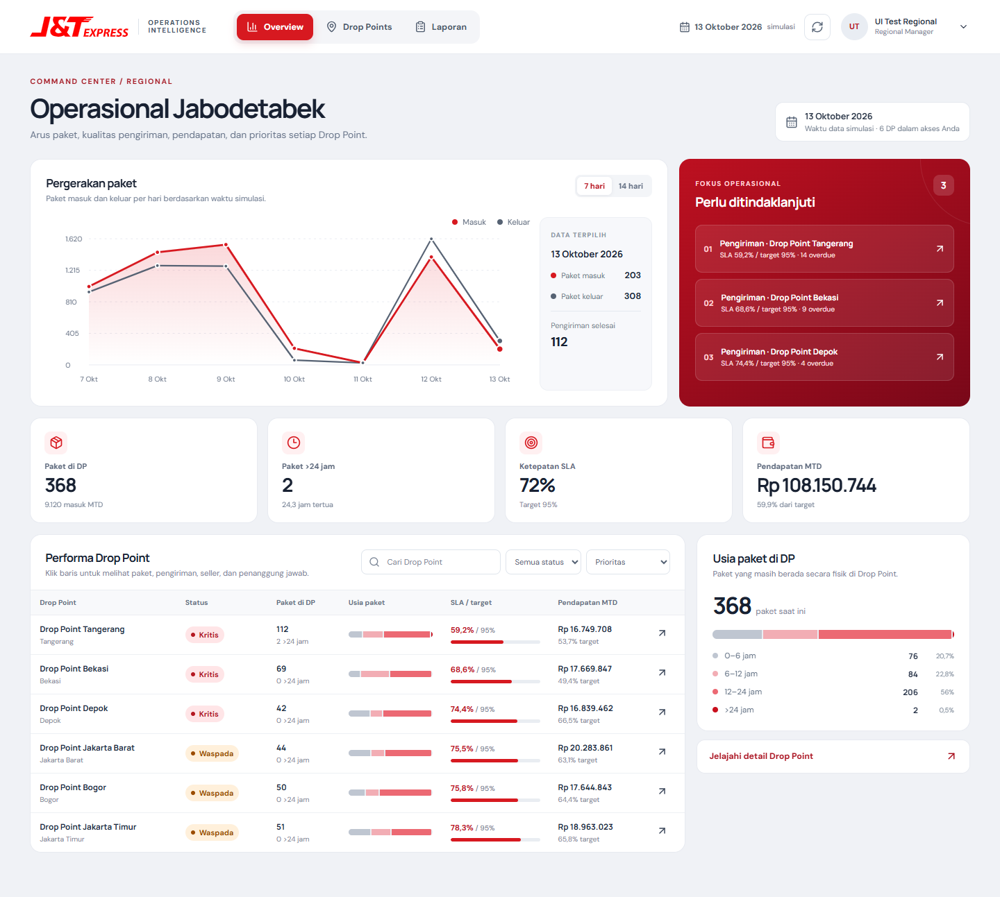
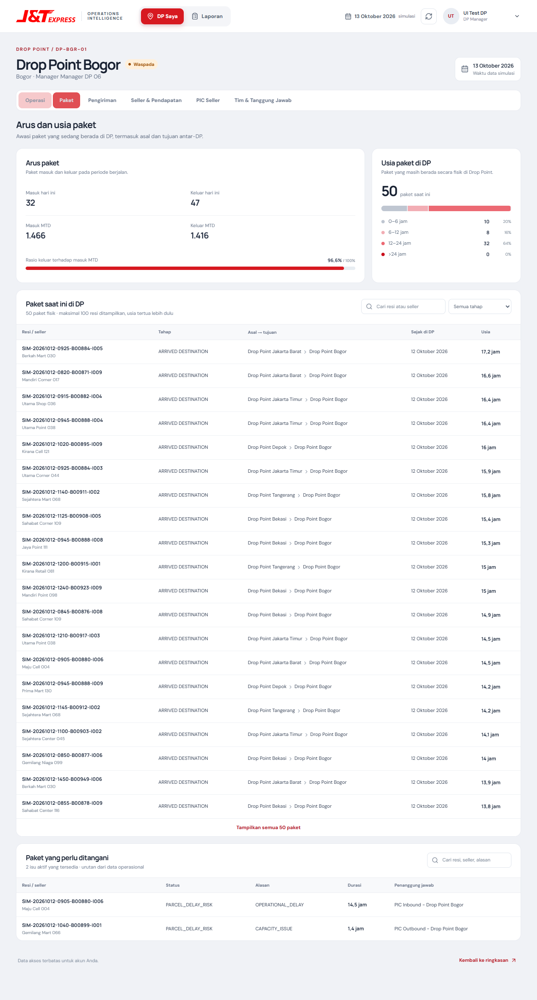

Satu tempat untuk membaca arus paket, kualitas pengiriman, pendapatan, dan prioritas tindak lanjut di jaringan Drop Point.

Dashboard membantu eksplorasi; monitoring otomatis mengangkat masalah penting saat manager belum membuka layar.
Laporan berulang, isu tersebar, dan analisis akar masalah membutuhkan banyak pemeriksaan manual per Drop Point.
Pergerakan shipment, seller, kurir, target, dan pendapatan masuk ke model operasional.
View analitik dan FastAPI menyusun SLA, backlog, usia paket, serta gap target secara terstruktur.
Manager melihat tren regional, membandingkan DP, lalu menelusuri komponen yang perlu perhatian.
n8n mengirim ringkasan dan alert ke Telegram; bot menjawab pertanyaan manager regional.
RECEIVED → SORTING → READY → IN_TRANSIT → ARRIVED_DESTINATION → OUT_FOR_DELIVERY → DELIVERED
KPI dihitung dari data terstruktur. Dashboard dan Telegram membaca hasil dari API yang sama sesuai jalur aksesnya.
Aktivitas shipment dan data operasional contoh.
Master, fakta, sesi, dan view analitik.
KPI, akses per role/DP, laporan, dan chat.
Rancangan Figma ke React/Vite: overview regional, detail DP, laporan CSV.
Laporan, alert, webhook, dan tanya jawab AI melalui API.
Tren, daftar prioritas, KPI, dan perbandingan antar-DP berada dalam satu tampilan.
Pilih 7 atau 14 hari untuk membaca paket masuk, keluar, dan pengiriman selesai.
Daftar DP yang perlu tindak lanjut membawa manager langsung ke detail lokasi.
Filter dan urutkan status, SLA, usia paket, serta pendapatan bulan berjalan.
Dari arus paket sampai tim yang harus menindaklanjuti. Manager DP langsung masuk ke lokasinya sendiri.

Membandingkan seluruh DP yang diberikan pada grant region.
Melihat antrean, isu, dan metrik hanya untuk DP miliknya.
Filter akses diterapkan oleh FastAPI. UI menyesuaikan menu, sedangkan API menolak permintaan lintas DP.
n8n menjalankan jadwal dan menerima webhook; FastAPI tetap menjadi sumber logika dan pembatasan data.
Memicu simulasi aktivitas operasional.
Ringkasan berkala melalui Telegram.
Rekap harian dari endpoint internal.
Notifikasi saat aturan risiko terpenuhi.
Jawaban untuk manager regional terdaftar.
Webhook masuk melalui ngrok ke n8n, lalu FastAPI memeriksa akses regional dan menyiapkan jawaban dari data operasional terstruktur.
AI membantu menjelaskan hasil; KPI utama dihitung oleh SQL/Python, bukan ditebak model.
Lima workflow aktif. Uji integrasi mencakup login dan akses lintas DP; screenshot dashboard diambil dari QA browser lokal.
DATA SIMULASI · LOCAL-FIRSTUntuk publik: frontend statis, API dan PostgreSQL memerlukan hosting HTTPS terpisah.